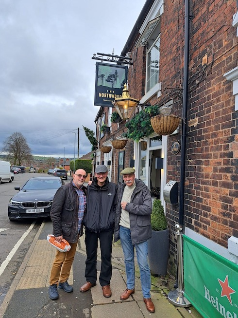

Digger's March on Hanley. 31st March 2023
Up for it were-
Digger, Anytime Tone, Turk, Bolt, Nails, Huge, Pedro, Keithee, Tarzan, Goosey, (Jaycee and DC for drinks only)
The plan was to meet at Bottlecraft in Hanley at 1.30pm. Digger, arrived first at about 1.15pm, with a bag full of Wrights sausage rolls.
As 1.30pm was approaching Digger was beginning to wonder if he'd got the wrong Friday due to him still being Billy No Mates.
At exactly 1.30pm to the second, Turk and Tarzan arrived, very closely followed by a thirsty looking pack of men. The suggestion of a kitty was not applied and therefore smaller breakaway groups formed to buy each other a drinks on a round robin basis.
Digger provided everyone with a Wrights Pies bag containing two delicious sausages roll each, they were eagerly consumed. Information was forthcoming that Bolt would be meeting us in the next pub, therefore a discussion was had as to whether Bolt qualified to receive a goody bag, Digger's email was very specific that Bottlecraft was the goody bag allocation location.
Upon checking the carrier bag Digger realised that the lady in the Wrights pie shop either couldn't count or she merely fell for Digger's charms, she had put 26 SR's in the bag instead of 24. Well, that left the SR bearer with a problem. Who would the extra fayre go to. Quick as a flash Digger decided to ask quiz type questions, with the first to shout out the correct answer, receiving the additional calories. JC got the first question correct and greedily devoured his prize. DC gave Digger some sound advice and suggested he ask questions that he actually knows the correct answer to beforehand. The last spare SR was given to DC for his advice.
Absent Squarrites were not forgotten and everyone was looking forward to seeing those who couldn't make it next time around.
Next stop was the Golden Cup in Old Town Road. Thankfully the rain held off during the 10 minutes walk, but it did look a bit black over Bills Mothers (hope Bill had a nice wedding anniversary).
On arrival at the Golden Cup Hughie was most impressed because the red carpet treatment had been provided at the entrance. Twelve noisey over 21's entered and the person behind the bar who was a young lady who's job it was to serve the dinks (dare I....... Barmaid) proclaimed we looked like the local youth club on a day out. Whilst Digger was at the bar the door flung onpe and like a Bolt from the blue he was there as expected with that usual big smile. Bolt promptly ordered an extra cold Guinness.
The snug at the rear of the cup was requisitioned by the youthful looking Squarrites. All present were very impressed with the Golden Cup (the premises, not the Barmaids bra). The Barmaid was a very cheerful young lady who stood on a stool to take a group photo.
DC told the lads about his job interview many years ago at the pottery factory opposite. He said the majority of the interview was spent exploring his religious beliefs ...OMG.
The group were taken on a trip down memory lane when a tale was told about Thora Herd ...LOL.
It was soon time to move on. A request was made to the young lady behind the bar who pulled the pints, if should could follow us and look after us at the next pub, sadly she stayed put.
Another 10 minutes walk to the Wheatsheaf Stores saw the lads passing the Keelings Road Wright's pie shop, all exercised great restraint and kept away.
It was there that Digger got some stick off JC who wanted to know where Norwood is? Digger said they were there but JC produced documented evidence that we were in fact in Norwood and not Northwood. Digger claimed the letters T & H on his keyboard were broken. The piss taking commenced with as many words as possible being pronounced with the 'th' as silent. There was a good Friday afternoon atmosphere in the Stores with plenty of locals wondering who we were, but like the well know Footie chant, it was soon time to go, time to go, time to goooooo.
Hughie soon fell in love with Norwood and as we left the Stores he was seen on the floor kissing the ground (what actually happened was he missed the step on the way out and clattered to the Norwood tarmac, fortunately he was uninjured. (Hughie, that's NOT what a pub crawl means !)
The now ever relaxing group of travellers arrived at The Northwood Inn (or as it will now be forever know, The Norwood).
There wasn't a great display of craft or cask ales on offer but the Neck Oil went down well there.
Bolt made a very good friend with his Namesake 'Dave the dog' and was soon showing it's owner his doggy style of making a fuss. It will remain a mystery why that dog is name Dave because it's a female.
Once again there was a great atmosphere in the Norwood but alas time to catch a bus to the Bellringer for the curry. Tarzan and Nails decided it was so friendly in the Norwood they ordered another beer and stayed there a while longer as the rest made their way to the bus stop.
There wasn't a great display of craft or cask ales on offer but the Neck Oil went down well there.
Bolt made a very good friend with his Namesake 'Dave the dog' and was soon showing it's owner his doggy style of making a fuss. It will remain a mystery why that dog is name Dave because it's a female.
Once again there was a great atmosphere in the Norwood but alas time to catch a bus to the Bellringer for the curry. Tarzan and Nails decided it was so friendly in the Norwood they ordered another beer and stayed there a while longer as the rest made their way to the bus stop.
A short walk past the Causley Brook Nature Reserve and the lads soon arrived at the Bellringer where a table for 10 had been very nicely laid. Now then, you might be wondering why we ended up at the Bellringer instead of a traditional Indian. Well, Digger wanted to make it a bit different because the Mirchi restaurant in Shelton had beed visited on the two previous Digger Doos.
It wasn't long before Tarzan and Nails arrived via a taxi ride.
It wasn't long before Tarzan and Nails arrived via a taxi ride.
There was a discussion about how many poppadoms each should have and it had to be pointed out that rule one, a True Squarrite orders 2 poppadoms each when entering an Indian restaurant. It could have been argued that we hadn't actually entered an Indian restaurant and as such rule one was null and void. It was agreed 2 poppadoms each. Main course was a choice of lamb balti or chicken tikka with rice and chips, naan and saag aloo.
Tarzan constantly took the Mick out of Digger and alleged that Diggers main reason to host the do at the Ringer was because he had only to walk two and a half yards home. For the second time that day Digger got some stick, but in accordance with Squarrite rule number 6, Digger cheerfully accepted having the Mick taken.
The end of a very pleasant day was nighe but attempts to call a taxi were for some to no avail. Digger had not done his research properly and had not realised it was Ramadan, taxis were few and far between. Keith, Hughie and Tony set off on foot to walk to Hanley bus station. Tony couldn't quite make it all the way without calling in at the Coach Makers for one last beverage.
Digger managed, aided by Diggeroo, to stagger the two and a half yards home and promptly fell to sleep on the sofa.
Cheers
Digger